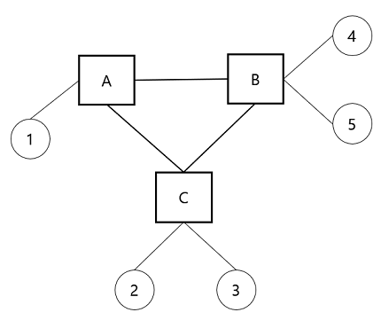
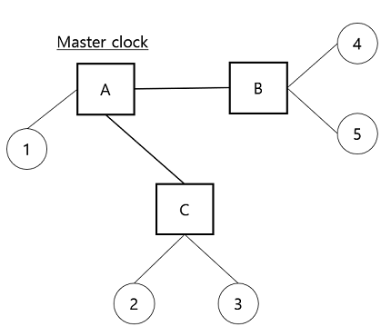
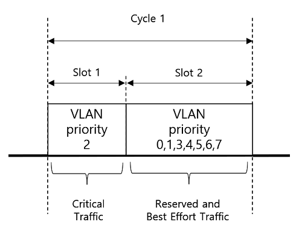
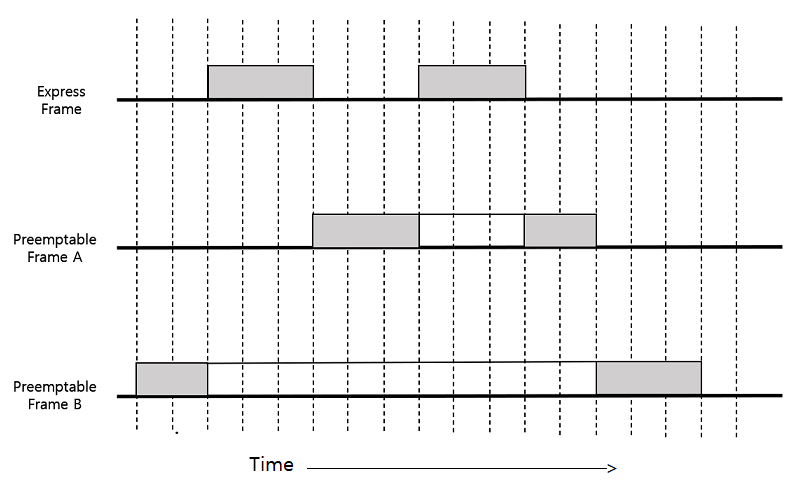
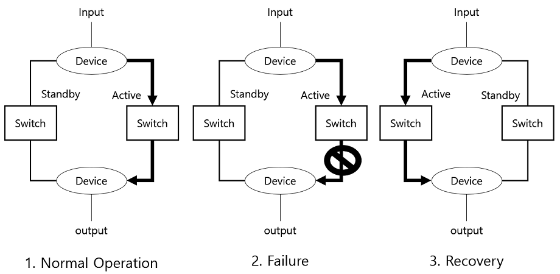
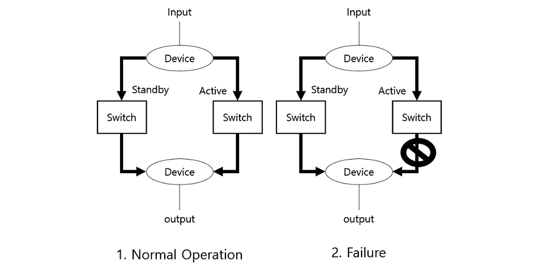
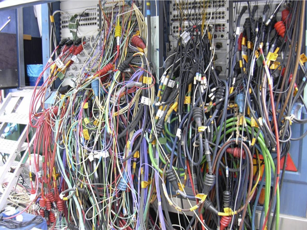
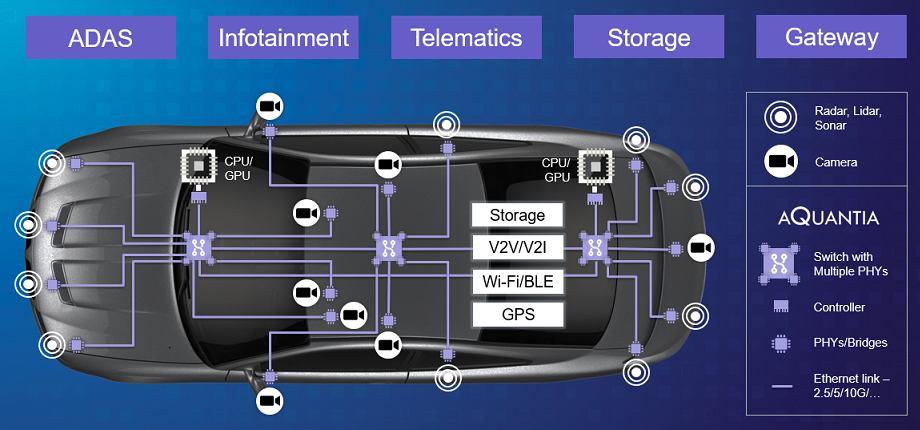

Traditional networks have developed in the direction of providing connected services to users, expanding service bandwidth, and guaranteeing service quality. Until now, network-based services have focused on people, and delays of tens of milliseconds have not been a big problem. However, with the advent of services that target things such as Machine-to-Machine(M2M) and the Internet of Things (IoT), we are facing a situation where our service is disrupted by the slightest delay. The Time-Sensitive Networking (TSN) technology standardized by IEEE 802.1 is an Ethernet-based networking technology to provide services for applications requiring ultra-low latency and high-precision characteristics. This paper explains what TSN is and how to implement deterministic communication and its core technology. Then, this paper shows the applications of TSN and the challenges it faces today.
Time-Sensitive Networking, TSN, IEEE 802.1, Deterministic Networking, Audio Video Bridging, AVB, Time Synchronization, Scheduled Traffic, Per-Stream Filtering and Policing, Cyclic Queuing and Forwarding, Frame Replication, Media Networking, Machine Control, Automotive Networks, TSN applications, TSN challenges
Ethernet technology has not only proven very successful, but it is also a communication method that exists throughout the IT world. However, to date, there has been no real-time support for IEEE standard Ethernet. Existing Ethernet networks may experience traffic delays of tens of milliseconds or more when traffic is concentrated on a specific node. Ethernet, which has become the worldwide standard for enterprise networking, has not met these deterministic requirements.
Industrial automation triggered by the 4th Industrial Revolution requires high availability and very low latency (less than 1ms) communication services such as real-time monitoring and high-precision remote control. IEEE 802.3 Although IEEE 802.3 Ethernet is a widely deployed, low-cost Layer 2 technology, it does not meet the deterministic requirements of achieving bounded latency and zero loss. To achieve deterministic performance, most industrial enterprises continue to use Fieldbus technologies and their proprietary enhancements to Ethernet (such as EtherCat, PROFINET, or SERCOS III) [Bhattacharjee18].
As a result, the current industrial networks are not uniform and have different appearances. The use of these individual products faced the limitations of low security and interoperability, which is currently an obstacle in industrial IoT network integration and transition to the 4th Industrial Revolution.
However, things are a little different now. This is because TSN, which evolved into the IEEE 802.1 standard, has emerged. Next, this paper will discuss what TSN is, how it achieves deterministic communication, and its applications and limitations.
This chapter covers why TSN emerged and what it is. Then, learn about the history of TSN and summarize its strengths.
TSN, as inferred from the title, is a set of technologies to support time-sensitive networks. It is a technology that can handle time-sensitive traffic by using the IEEE standard Ethernet that we are currently using [Messenger18]. In other words, TSN is to provide zero loss from congestion and bounded latency for a variety of time-sensitive data streams coexisting on a network that also supports best-effort traffic [wiki01]. TSN provides ultra-low latency networking for a local area network that is built with a small number of devices located at a relatively close distance. Likewise, it can be applied to any application such as industrial automation where the delay deviation of a traffic flow must not exceed a specified range.
Early TSN designs were intended for use with audio and video streaming containing large amounts of data in systems with numerous end stations. TSN extends the IEEE 802 optimal networking model by introducing a new streaming concept. This concept supports a set of features that enhance the real-time capabilities of streams.
In other words, it can be seen as a technology set that guarantees the arrival time of data between nodes in an Ethernet network where the arrival time is otherwise not guaranteed.
TSN is a set of standards-based on Audio Video Bridging (AVB). Traditionally, analog audio-video (AV) equipment has used a one-way, single-purpose, point-to-point connection. This approach results in a lot of confusing cable clumps in professional applications and high-end audio. Many attempts have been made to solve this problem, and the result is AVB. AVB has been studied with two goals in mind to deliver time-sensitive audio/video files with lossless and low latency. In addition, AVB has a great advantage in that it does not require additional equipment costs because it was developed based on Ethernet, which is already widely used. In other words, AVB is the result of unifying the confusing existing interfaces and overcoming the limitations of quality assurance with the traditional Ethernet communication method.
2.3.1 Bounded latency and zero congestion loss
Congestion loss, the statistical overflowing of an output buffer in a network node, is the main cause of packet loss in a best-effort network [Finn18]. To deal with this problem, TSN transmits by grafting the concept of priority to a method similar to the traditional Time-Division Multiplexing (TDM). Since packets are allocated an available time for transmission according to priority, arrival time is guaranteed, and even if a bottleneck occurs, transmission can be performed without affecting the predetermined priority. Therefore, TSN can guarantee worst-case arrival times in any case, which is a clear advantage that traditional Ethernet cannot have.
2.3.2 Reliable packet delivery
Very reliable packet forwarding is possible. Besides congestion loss, one of the most important causes of packet loss is equipment failure [Finn18]. A TSN network can send a copy of data in transmission and deduplicate it at the destination. Because all packets are duplicated and delivered to their destination, no single packet is lost due to a single equipment failure. This, combined with the advantage of being reached on time, makes the TSN more complete.
2.3.3 Reduce network cost and complexity by coexistence with Ethernet
TSN coexists with the traditional Ethernet method. Additionally, non-TSN traffic can use any contracted bandwidth not used by TSN flows. And since it is implemented on top of the traditional Ethernet method, there is no need to replace the equipment, and it can be integrated and managed. This is a huge advantage for the application of TSN.
This chapter shows that why TSN has emerged, what it is, and what its advantages are. TSN guarantees deterministic communication by using existing Ethernet technology. In addition, TSN is a set of standards developed based on AVB [wiki02]. TSN has the advantages of bounded latency, reliable packet delivery, and coexistence with Ethernet. In the next chapter, we will take a closer look at the technology and how TSN can have these benefits.
TDM is a traditional approach that transmits multiple continuously changing signals side-by-side on the same line, such as digitized phone calls and video [Messenger18]. TDM uses time slicing to transmit these signals without significant interference but also introduces the limitation that unused fragments cannot be used to carry other traffic. TSN is a set of technologies that use the time division of TDM while ensuring that there are no unused fragments. This chapter is going to take a detailed look at the meaning of 'deterministic' and the technologies of TSN that make it possible.
Deterministic communication means guaranteed and reliable. Standard Ethernet networks are probabilistic. Network operation relies on the assumption that nodes (or devices) will not transmit simultaneously [motion01]. When two nodes attempt to transmit at the same time, this is called a 'collision', which makes it impossible to transmit data at the right time.
However, deterministic communication is a network that always delivers the same value or arrives at the same state. According to Wikipedia, a deterministic system means 'in which no randomness is involved in the development of future states of the system' [wiki04]. If we apply this to a network and interpret it, we can interpret deterministic communication as a network that always transmits events exactly at the same time. It is often used interchangeably with 'bounded response' or 'bounded latency'.
In short, deterministic means data transmission timing can be guaranteed within a certain margin of error.
All devices participating in the TSN network are synchronized to the global time, which is handled by the IEEE 802.1AS standard intel18[intel18]. It ensures that at any point in time, endpoint nodes or switches read approximately the same local computer time.
TSN/AVB's clock synchronization protocol is standardized as IEEE 802.1AS and overlaps significantly with the IEEE 1588 standard. The IEEE 1588 Precise Time Protocol (PTP) standard is used to distribute an accurate timing reference between devices and switches on a network. It also allows for time synchronization based on external references such as Global Positioning System (GPS) [Bhattacharjee18].
For time synchronization, IEEE 802.1AS specifies a classic master-slave clock synchronization protocol. One component (the endpoint or bridge) will act as the master clock for the other component, and this is called the grandmaster. A spanning tree is used to link all local clocks of a component.
For example, let’s suppose there is a TSN/AVB network consisting of five connected end stations (labels 1–5) and three bridges (labels A–C) as shown in Figure 1. The network in Figure 1 is connected using a spanning tree with time synchronization as in Figure 2. It can be seen in this example that bridge A acts as a grandmaster clock providing local time to all other bridges (B-C) and endpoints (1–5) [Zurawski17].
|  |  | |
| Figure 1: A TSN/AVB network before time synchronization [Zurawski17] |
Figure 2: After selecting Master clock using Spanning Tree Protocol (STP) [Zurawski17] |
TSN uses what IEEE 802.1Qbv calls time-aware shapers to achieve traffic prioritization for deterministic delivery. A time-aware shaper divides time into cycles and then allocates cycles by dividing them into slots. Each time slot can be assigned one or more of the eight Ethernet priorities.
Figure 3 shows the cycles, slots, and priorities of the schematic. Nodes participating in the network agree to TSN communication to divide these cycles into time slots [Bhattacharjee18].
|  |
| Figure 3: Structure of a time-aware shaper [Bhattacharjee18] |
TSN defines three types of traffic: critical traffic, reserved traffic, and best-effort traffic. Industrial automation and control traffic that requires limited latency and zero congestion loss is an example of critical traffic. A reserved traffic type is a frame allocated in different time slots with a specified bandwidth reservation. Best effort traffic is plain Ethernet traffic that has no specific Quality of Service (QoS) requirements.
In summary, for deterministic communication, a time shaper divides time into cycles and assigns it to each slot, and the slot can transmit data according to its priority.
802.1Qci provides filtering and policy capabilities on a per-stream basis using stream identification. A stream is identified by mapping a combination of header fields to an Internal Priority Value (IPV) that determines the class. Various combinations of a MAC source address, destination address, VLAN, and IP header fields can be used to identify streams. Moreover, it is designed to be extensible. Stream filters can direct traffic streams to specific meters and output queues through stream gates and detect and block specific error conditions.
This classified stream enters Cyclic Queuing. IEEE 802.1Qch collects packets according to the class of incoming traffic and delivers them one at a time. This circular queue and queue emptying procedure provides a defined (but not optimal) upper bound on latency and ensures that frames are sent within a bounded latency.
Existing Ethernet transmits only one packet at a time and cannot transmit different urgency or priority. In addition, since large packets have less overhead compared to small packets, the transmission of large packets is common in the existing Ethernet. Large packets take up long transmission times and do not match the requirements of time-sensitive traffic.
One solution to this problem is to stop sending packets to send more urgent packets, which is what 802.3br and 802.1Qbu do [ieee18a]. Urgent packets are marked as 'Express' and preemptable packets are marked as 'Preemptable'. The preemptive packet pauses the transmission of the packet while the Express packet is being transmitted and resumes transmission from where it left off when the transmission of the Express packet is complete.
As shown in Figure 4, Express packets achieve the desired bound latency through preemption.
|  |
| Figure 4: Express Frame can stop other preemptable packets [ieee18b] |
In this way, the "fast lane" can be used for high-priority traffic, which plays an important role in deterministic communication.
Downtime is unacceptable for critical infrastructure and time-sensitive processes. TSN uses redundancy to avoid such downtime. There are two types of redundancy, called dynamic replication and static replication. Dynamic replication may not be acceptable for certain applications as the dynamic method takes some time to recover from equipment failure. Because TSN does not allow for recovery time, static replication is used instead of dynamic replication.
Figure 5 shows dynamic redundancy. If one side fails, it recognizes it and retransmits it by selecting an alternative route. This process is quick, but of course, recovery time is still needed.
|  |
| Figure 5: Dynamic replication [Ditzel20] |
Figure 6 shows the static redundancy used by Frame Replication and Elimination for Reliability (FRER). Packets are replicated, creating two (or more) identical packet flows. These flows can be unicast flows or multicast flows. Replicate packets are detected and removed at or near the receiving end station(s) [Finn18]. FRER uses this static redundancy method to make the recovery time zero [Ditzel20].
|  |
| Figure 6: Static replication [Ditzel20] |
This chapter takes a closer look at what 'deterministic' means and the technologies of TSN that make it possible. Time Synchronization, Scheduled Traffic, Per-Stream Filtering and Policing & Cyclic Queuing and Forwarding, Frame Preemption, Frame Replication and Elimination for Reliability are required for deterministic communication. TSN achieves deterministic data transmission through this set of technologies.
TSN provides time synchronization and deterministic communication using standard Ethernet networks. Therefore, any application that requires time-sensitive control can benefit from TSN. Let's take a look at what fields TSN applies to, and the limitations it has.
4.1.1 Audio/Video Networking
Audio/Video Networking was also covered in the history of TSN and it started with the technology to support the media in the first place. Networks carrying audio and video information must adhere to strict timing rules. If the audio or video packet arrives at the destination late, the sound source and video cannot be output correctly. Therefore, one-way, single-purpose, point-to-point connections have been used.
This connection method results in different interfaces and complex cabling, which is easily understood by looking at Figure 7. You can see why the media market needed AVB. The cabling complexity can be dramatically reduced compared to the conventional method in which all lines are concentrated and connected in one place.
|  |
| Figure 7: An example of an outdoor stage sound equipment setting [wiki02] |
4.1.2 Automotive Networks
Vehicles are machines that are directly related to human safety. Advanced Driver Assistance Systems (ADAS) are becoming more and more popular in recent years. Adaptive Cruise Control (ACC), Automatic Braking System (ABS), Automatic parking, Blind-spot monitors, and Pedestrian monitors are examples of ADAS.
As shown in Figure 8, driving assistance devices such as radar and cameras for better driving are already included in many vehicles, and it is clear that more and more are expected. Connecting all of this equipment with wires is not a long-term alternative.
|  |
| Figure 8: An example of future in-vehicle networks [eetasia18] |
TSN's ultra-low latency, ultra-low loss make it an alternative to connecting any electronic device in a vehicle, and deterministic transmission is essential to control these devices. And in addition to the benefits offered by deterministic transport, compatibility with legacy Ethernet offers significant benefits for automotive applications. There is no need to rely on cumbersome legacy networking protocols such as FlexRay, LIN, and MOST used to interconnect various systems inside the car. Processing multiple types of data (control, air conditioning, electronics, infotainment, etc.) on one unified platform is important in an environment such as automobiles. Moreover, now automakers are moving to use Ethernet (with TSN) for connection of the vehicle ECUs [wiki03]. In the future, more ADAS will be connected and TSN will provide the core network in an automobile.
4.1.3 Machine Control
As the main users of the network move from people to M2M, TSN technology has potential markets in a variety of fields. TNS is attracting attention from many markets in line with changes in industrial networks such as industry 4.0. It can be applied to any field requiring time-sensitive control. It can be used, for example, in a machine control system between equipment in a factory. The machine control network accepts input from sensors, performs control processes, and initiates actions in response. Creating a predictable machine control system requires the implementation of a deterministic network. Historically many companies have used proprietary Fieldbuses, but this had technical and business limitations, especially related to scalability, bandwidth, vendor neutrality, and flexibility [wiki03]. Now, NI and Hilscher, the leaders in the industrial equipment TNS market, have started adding products that support TSN to their product lines. And these products will increase TSN utilization even more in the future.
Time synchronization is essential to implement deterministic transmission of TSN. The IEEE 1588-2008 standard is used for time synchronization, and the standard is known to have vulnerabilities. Because time information is transmitted over Ethernet, it is vulnerable to insider threats such as packet tampering, Denial of Service (DoS), and delay attacks. Time Synchronization Attacks (TSA) targeting on IEEE 1588 may result in timing errors or cause the loss of synchronization, which may potentially lead to catastrophic failures of monitoring, protection, and control applications. The results of DoS attacks, delay attacks, modification attacks, and spoofing attacks can force a slave clock to align to a false time or lose synchronization [Han19]. And for high-priority reserved traffic, providing cryptographic protection, authentication, and the integrity of all messages at wire speed is a challenge. Finally, the standard for how a TSN should be structured is not yet finalized. The absence of a TSN configuration standard will be the single biggest constraint on future TSN adoption. Fortunately, IEEE 802.1Qcc to support centralized configuration for TSN is currently being drafted.
Chapter 3 discusses TNS’s applications and challenges. By supporting deterministic real-time communication on top of Ethernet, TSN is expanding its reach to many industries. Any application that requires time-sensitive control can consider using TSN. In addition to the media network in which it was born, TSN is expanding its reach to automotive automation and industrial machine control. However, it inherits the vulnerability of IEEE 1588 adopted for time synchronization, and the standard for configuring TSN has not yet been extended. It is expected that these obstacles will be resolved over time, and the future of TSN is bright as the advantages outweigh the disadvantages.
This paper covers the emergence of TSN, its background, advantages, underlying technology, applicable fields, and limitations. TSN is a set of standards developed based on AVB and has the advantages of limited latency, reliable packet forwarding, and coexistence with Ethernet.
TSN is gradually expanding the field of application with deterministic communication as a weapon. Deterministic communication means that we can guarantee the lowest possible time for data transmission.
We also looked at various techniques for implementing deterministic communication. At the heart of implementing that technology is a standard called time synchronization. TSN uses a grandmaster clock to unify the time of all nodes (IEEE 802.1AS-REV). And to implement 'deterministic' communication, TSN divides time into slots and then transmits with priority (IEEE 802.1Qbv), and follows the Per-Stream Filtering and Policing (PSFP) standard for classifying priorities (IEEE 802.1Qci). In addition, the timely arrival of data is guaranteed through the preemption of 'Express', the most urgent data (IEEE 802.3br, IEEE 802.1Qbu). In addition, data transmission is guaranteed even in the event of a malfunction of one switch through redundant transmission and removal of data (IEEE 802.1CB). TSN achieves deterministic data transmission through a set of technologies we have seen so far.
TSN is expanding beyond media networks to automotive automation and industrial machine control as the primary users of the network move from people to M2M. There are limitations such as an attack vulnerability for time synchronization and an unconfirmed standard for the TSN setting, but it is expected to be resolved soon.
Standard Ethernet faithfully performs the role of data transmission but has a weakness in that it does not guarantee real-time and scalability. TSN, which emerged to solve this problem, shows that it is leading innovation in layer-2 networking by combining several existing standards into one package. Although there are some challenges to be solved, the future of TSN is bright due to the emergence of services that target things such as M2M and IoT, which started with the 4th industrial revolution.
[Bhattacharjee18] Sravani Bhattacharjee, "Practical Industrial Internet of Things Security" Packt Publishing, 2018, ISBN: 9781788832687, 9781788832687 (Safari Book)
[Zurawski17] Richard Zurawski, "Industrial Communication Technology Handbook, 2nd Edition" CRC Press, 2017, ISBN: 9781482207330, 1482207338 (Safari Book)
[Finn18] Norman Finn, "Introduction to Time-Sensitive Networking", IEEE, 2018, pp. 22-28, https://ieeexplore.ieee.org/document/8412458
[Messenger18] John L. Messenger, "Time-Sensitive Networking: An Introduction", IEEE, 2018, pp. 29-33, https://ieeexplore.ieee.org/document/8412459
[Han19] Mingyu Han, Peter Crossley, "Vulnerability of IEEE 1588 under Time Synchronization Attacks", IEEE, 2019, https://ieeexplore.ieee.org/document/8973494
[Ditzel20] George Ditzel, "The Comparison/Contrast of TSN", Schneider Electric, 2020, https://www.odva.org/wp-content/uploads/2020/05/2020-ODVA-Conference_TSN_FRER_PRP_Ditzel_Final.pdf
[ieee18a] "Introduction to IEEE 802.1: Focus on the Time-Sensitive Networking Task Group", http://www.ieee802.org/1/files/public/docs2018/tsn-farkas-intro-0318-v01.pdf [An introductory presentation to Time-Sensitive Networking standards]
[ieee18b] "TSN Basic Concepts", https://www.ieee802.org/1/files/public/docs2018/detnet-tsn-farkas-tsn-basic-concepts-1118-v01.pdf [Overview about TSN]
[wiki01] "Time-Sensitive Networking", https://en.wikipedia.org/wiki/Time-Sensitive_Networking [General explanation about Time-Sensitive Networking]
[wiki02] "Audio Video Bridging", https://en.wikipedia.org/wiki/Audio_Video_Bridging [Technical standards which provide improved synchronization, low-latency, and reliability for switched Ethernet networks]
[wiki03] "Time Sensitive Networking (TSN) Frequently Asked Questions", https://www.ni.com/en-us/innovations/white-papers/18/time-sensitive-networking--tsn--frequently-asked-questions.html#section-1087022348 [A collection of questions and answers about TSN]
[wiki04] "Deterministic system", https://en.wikipedia.org/wiki/Deterministic_system [Definition of Deterministic system]
[intel18] "Time-Sensitive Networking: From Theory to Implementation in Industrial Automation", https://www.intel.com/content/dam/www/programmable/us/en/pdfs/literature/wp/wp-01279-time-sensitive-networking-from-theory-to-implementation-in-industrial-automation.pdf [From Theory to Implementation in Industrial Automation using TSN]
[motion01] "Deterministic, real-time control", https://www.motioncontroltips.com/deterministic-real-time-control-what-does-it-really-mean-in-motion-control-applications/ [About meaning of Deterministic and realtime]
[eetasia18] "Autonomous Vehicles Driving New Data Interfaces", https://www.eetasia.com/18081001-autonomous-vehicles-driving-new-data-interfaces/ [Description of network interfaces for the automotive industry]
| ABS | Automatic Braking System |
| ACC | Adaptive Cruise Control |
| ADAS | Advanced Driver Assistance Systems |
| AVB | Audio/Video Bridging |
| FRER | Frame Replication and Elimination for Reliability |
| GPS | Global Positioning System |
| IoT | Internet of Things |
| IPV | Internal Priority Value |
| M2M | Machine-to-Machine |
| PSFP | Per-Stream Filtering and Policing |
| PTP | Precise Time Protocol |
| QoS | Quality of Service |
| STP | Spanning Tree Protocol |
| TDM | Time-Division Multiplexing |
| TSN | Time-Sensitive Networking |